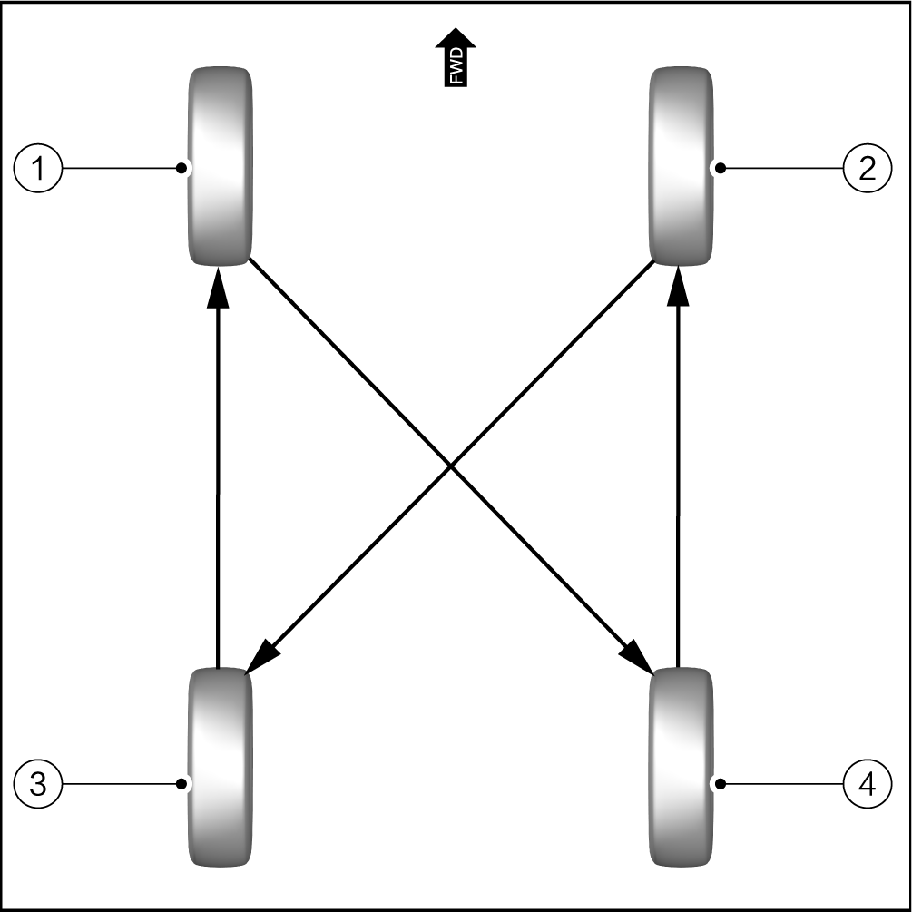

Tire Rotation

For the sake of driving safety, all wheels must be equipped with radial tires with the same model, size (rolling circumference) and tread pattern as those in the factory status.

-
To ensure even tire wear and prolong the service life of tires, it is recommended to perform tire rotation according to the maintenance schedule or when the difference of tread depths is greater than or equal to 2 mm. However, the most appropriate time for tire rotation depends on the driver's driving habits and road conditions.
-
For vehicles equipped with tire pressure monitoring display, the tire pressure monitoring module needs to be re-matched and learned after tire rotation. Refer to Tire Pressure Monitoring Module Matching
Front and rear tires bear different loads and experience varying degrees of wear. To prevent uneven wear, it is necessary to rotate tires regularly or as needed, thus extending their lifespan.
The main purposes of tire rotation are:
-
Ensure even tire wear and fatigue to improve stability and cost-effectiveness.
-
Check the condition of tires during rotation to find out the damage in time and prevent accidents.
-
When rotating tires, make sure that the tires of the steered wheels are in the best condition to improve the vehicle stability and safety.
Repair tools and equipment required
-
Tire rack
-
Torque wrench (60-340 N•m)
Cross tire rotation
-
Steps for tire rotation
-
Remove 4 wheel assemblies of the vehicle.
-
Move wheel 1 to the original installation position of wheel 4.
-
Move wheel 4 to the original installation position of wheel 2.
-
Move wheel 2 to the original installation position of wheel 3.
-
Move wheel 3 to the original installation position of wheel 1.
 -
Directional tires can only be exchanged between front and rear wheels, and cross rotation is not allowed; otherwise, it may deteriorate driving safety and cause serious casualties!